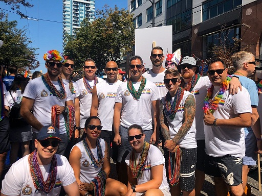
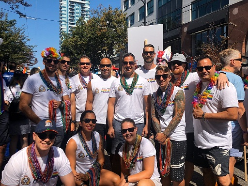
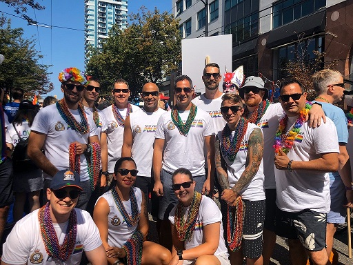

Skidmark Of Intolerance
NOTE: This is an old story, I’m reprinting it again, because fuck the WVPD
Here’s an official WVPD report that your taxes paid for:
TDC_ARTICLE_START
West Vancouver – West Vancouver Police are investigating a mischief to property, after someone defaced the departments new Pride crosswalk.
On July 7, 2020 at 4:04 pm staff inside the police station heard a loud and sustained tire squealing outside. When officers took a closer look, they discovered that someone had just left tire marks across a portion of the crosswalk, at the intersection of 16th St and Esquimalt Ave.
The suspect vehicle left the area at a high rate of speed and was not located.
“This is very upsetting,” says Cst. Kevin Goodmurphy. “For whatever reason, this person has chosen to leave a gesture of hate on a crosswalk that stands for the exact opposite.”
Investigators have captured CCTV footage of the incident and are looking for the following vehicle:
1999-2004 Ford Mustang, black in colour, with red racing stripes along the top and sides, with a rear spoiler and hood scoop.
There appear to be two occupants in the vehicle.
“We have had nothing but support from community members following the installation of the crosswalk, and we know that those people represent the majority.” says Goodmurphy.
Anyone with information is asked to contact the West Vancouver Police at 604-925-7300 and reference file #20-7149. If you wish to remain anonymous, visit Crime Stoppers online at solvecrime.ca or call 1-800-222-8477.
TDC_ARTICLE_STOP
The West Vancouver Police Department, WVPD, has been horrified to find their new Rainbow Crosswalk "vandalized," by someone driving a Mustang a little too fast. At around 4PM on July 7th, the WVPD heard some loud tire squeals, and saw a Mustang drive away, which was caught on camera. The Pension Seekers immediately rushed into action. "What, a rape on Cambie? Ain't nobody got time for that. Somebody left a tire mark on a Rainbow we painted a week ago."
 To say that this story is ridiculous is only half true. This is the police doing what they're paid to do, which is enforce AIDS cultural norms. Lest we have any "muh Thin Blue Line," faggots in our political movement, I will forever be linking back to this. I personally know multiple people who have had the police suddenly show up at their doors because they "have hate speech on their phone." In fact, it pisses me off anyone who even suggests that this story is ridiculous, it's not ridiculous. This is entirely the WVPD laughing at the people they rule over, this is tyranny.

To say that this story is ridiculous is only half true. This is the police doing what they're paid to do, which is enforce AIDS cultural norms. Lest we have any "muh Thin Blue Line," faggots in our political movement, I will forever be linking back to this. I personally know multiple people who have had the police suddenly show up at their doors because they "have hate speech on their phone." In fact, it pisses me off anyone who even suggests that this story is ridiculous, it's not ridiculous. This is entirely the WVPD laughing at the people they rule over, this is tyranny.
From their "out on patrol" tour
But yes, the facts of the case are ridiculous. Below I've included pictures of the skid mark, along with random pictures of different skid marks. I feel stupid for even having to say that these things happen. More on the WVPD themselves in the next post.
UPDATE:
The WVPD left two numbers for people to call in with this story, and have one Constable Kevin GoodMurphy on the case. So what can we find out about Kevin GoodMurphy? Well here's his twitter page.
https://twitter.com/GoodMurphyWVPD
Strongly recommend checking that one out. He's the typical Oven-Middle Class Striver. Retweets the WVPD account. Sucks up to his bosses. Tweets about LGBT garbage. If you want to see an actually somewhat disturbing twitter thread, go look at this.
https://twitter.com/GoodMurphyWVPD/status/1268305333581012993
Click on that, then click on what he's retweeting, and you'll find yourself 10 cops deep all repeating "Count me in. There is no place for racism or hate in this world. We have the power to be part of the change! Join me by nominating 5 others to do the same." It's bizarre and downright creepy.
Anyway, GoodMurphy can be quoted as saying, TDC_ARTICLE_START
“This is very upsetting,” says Cst. Kevin Goodmurphy. “For whatever reason, this person has chosen to leave a gesture of hate on a crosswalk that stands for the exact opposite."
TDC_ARTICLE_STOP
From WVPD's own website. Later, we find GoodMurphy saying, TDC_ARTICLE_START
“It’s our belief now, having interviewed this young person, that a mistake was made. We have no evidence to suggest that a hate crime took place, that any hateful behaviour towards a specific group, LGBTQ2S+ or otherwise, took place when this vehicle was driven in this manner. This person was issued violation tickets as opposed to charged criminally," he said.
TDC_ARTICLE_STOP
Taken from the nsnews.com website. So this guy is out there assigning motive to a case, then walking back when faced with the evidence. I am going to call both numbers that I have been given for this case, and record this like I did with CTV. The rough structure for the call I will outline below.
UPDATE:
What material is the pride strip made out of? Paint, Chalk? What?
When was the security camera that caught this installed?
Who was in the Mustang? Can I get in contact with them?
What are they being charged with?
Since there are clearly tire marks over various things painted on streets, are there any other cases of someone being arrested for putting skid marks on other road markings?
If so, can I see some evidence?
(If he says it's because its LGBT) So this is not about security concerns for illegible road signage then?
“This is very upsetting,” says Cst. Kevin Goodmurphy. “For whatever reason, this person has chosen to leave a gesture of hate on a crosswalk that stands for the exact opposite.” That's written up on the WVPD website. Do you speak for the WVPD when you say that?
So if "no evidence to suggest hate crime took place," Constable GoodMurphy. Make sure that GoodMurphy said that. Ask why he said "For whatever reason, this person has chosen to leave a gesture of hate on a crosswalk..."?
Is it normal procedure for the WVPD to make comments assuming motive?
How many so-called "hate crimes," does the WVPD process per year? How many last year? This year to date?
Where can I see a list of all the so-called "Hate Crimes," pursued by the WVPD?
Why did you delete a tweet of a dog with shades saying "Haters gonna hate"?
Oh man, there's more to add, but I gotta get the TRS guys on this.
UPDATE:
Welp, I have called in earlier, and uploaded that video to Bitchute here: https://www.bitchute.com/video/9v4XbLF5jsuu/
I only got about 4 questions that I cared about in, before Constable Kevin Goodmurphy got assmad and ragequit. Highly recommended television. Still, a very educational experience for me, and it's eye opening how evasive and slimy Goodmurphy really was on the phone.
UPDATE:
The highlights, or the TL:DR of this whole story now is this:
June 3oth, the WVPD unveiled an LGBT Rainbow decal which they put on the road.
Just 8 days later, July 7th, they report a "gesture of hate," someone left on their precious decal.
They send out a "do you have information on this citizen," propaganda blitz
The suspect turns themselves in a few days later, they are under the age of 18, and are not criminally charged, but is given a "Violation Ticket," for "Provincial Legislation under the Motor Vehicle Act." (Something I need to follow up BTW)
I call in to Constable Goodmurphy a few times, and get him at 2PM July 15th.
He refuses to explain what material the decal is made out of
He refuses to explain when the security camera was installed
He refuses to show any cases of anyone else being charged for leaving skid marks on a road decal.
He gives a canned, totally evasive answer to me bringing up his assumption of motive, which is borderline legal slander.
My theory on what happened is this: This is police entrapment. They set this up looking for some peasant that they wanted to beat down and humiliate. That this somewhat blew up in their faces by being too obvious, and the suspect being a minor, is irrelevant.
I will need to do followup on this in person, where I get a close up look at the road, and the station, because I strongly suspect that there is another camera at the front of the station. I also need more answers period.
The assmad pension-seeker from the video
To say that this story is ridiculous is only half true. This is the police doing what they're paid to do, which is enforce AIDS cultural norms. Lest we have any "muh Thin Blue Line," faggots in our political movement, I will forever be linking back to this. I personally know multiple people who have had the police suddenly show up at their doors because they "have hate speech on their phone." In fact, it pisses me off anyone who even suggests that this story is ridiculous, it's not ridiculous. This is entirely the WVPD laughing at the people they rule over, this is tyranny.
